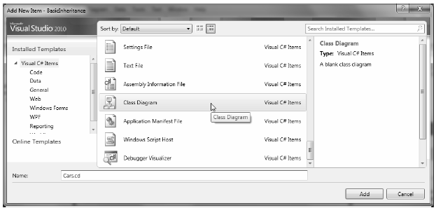
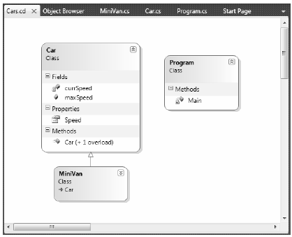

In Chapter 2, I briefly mentioned that Visual Studio 2010 allows you to establish base/derived class relationships visually at design time. To leverage this aspect of the IDE, your first step is to include a new class diagram file into your current project. To do so, access the Project > Add New Item menu option and select the Class Diagram icon (in Figure 6-2, I renamed the file from ClassDiagram1.cd to Cars.cd).
Figure 6-2 Inserting a new class diagram
Once you click the Add button, you will be presented with a blank designer surface. To add types to a class designer, simply drag each file from the Solution Explorer window onto the surface. Also recall that if you delete an item from the visual designer (simply by selecting it and pressing the Delete key), this will not destroy the associated source code, but simply removes the item off the designer surface. The current class hierarchy is shown in Figure 6-3.
Figure 6-3. The visual designer of Visual Studio
Note As a shortcut, if you wish to automatically add all of your project's current types to a designer surface, select the Project node within the Solution Explorer and then click the View Class Diagram button in the upper right of the Solution Explorer window.
Beyond simply displaying the relationships of the types within your current application, recall from Chapter 2 that you can also create brand new types and populate their members using the Class Designer toolbox and Class Details window.
If you wish to make use of these visual tools during the remainder of the book, feel free. However, always make sure you analyze the generated code so you have a solid understanding of what these tools have done on your behalf.